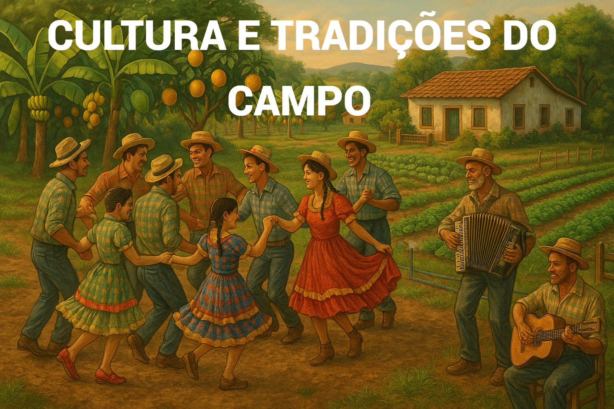
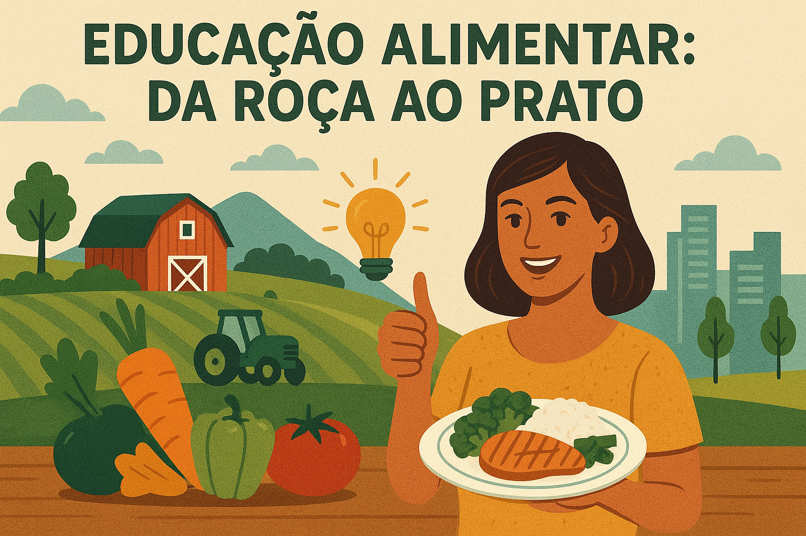
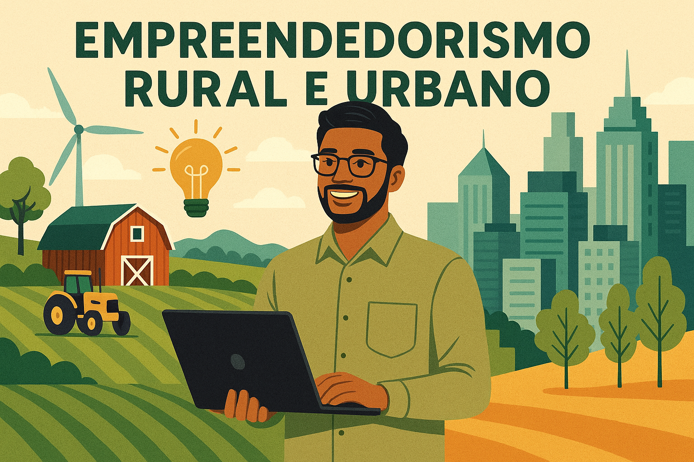

Escolha seu Curso

Explore os saberes populares, festas, práticas agrícolas e a importância da vida rural para a identidade cultural brasileira.
Aprenda sobre alimentação saudável, o ciclo dos alimentos e a valorização da produção local no cotidiano.
Descubra como transformar ideias em negócios sustentáveis no campo e na cidade, com foco na inovação social.